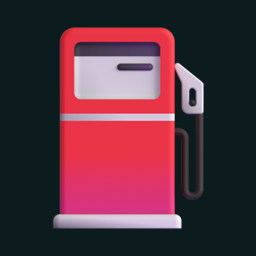

Fuelog
Ver.1.23
MAZDA2
現在の走行距離
--
km
平均燃費
--
km/L
給油回数
--
回
前回の給油
--
今月の給油額
--
円
未バックアップ
↻
📥 みんカラの過去データ（92件）を読み込む
›
☁️ Driveの内容で復元する
燃費の推移（km/L）
まだ満タン給油のデータがありません
＋
Home
Log
給油を記録
日付
総走行距離（オドメーター・km）
給油量（L）
燃料単価（円/L）
給油スタンド（任意）
満タン給油
区間距離・金額はここに自動計算表示されます
キャンセル
保存
この記録を削除